Projektai
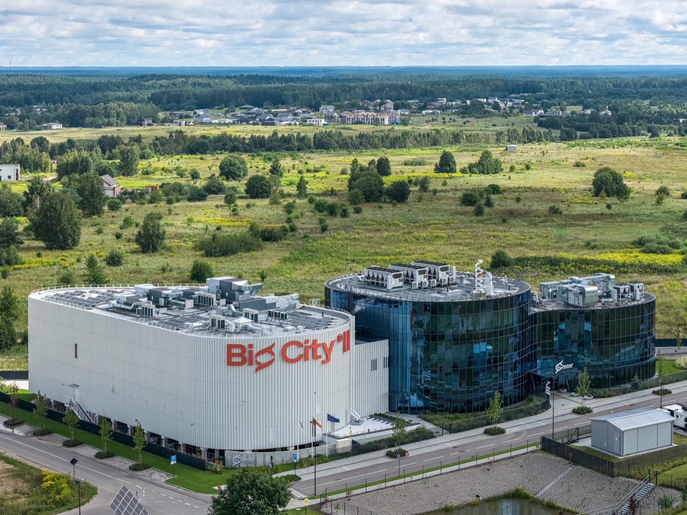
BIO CITY IIArchitektūra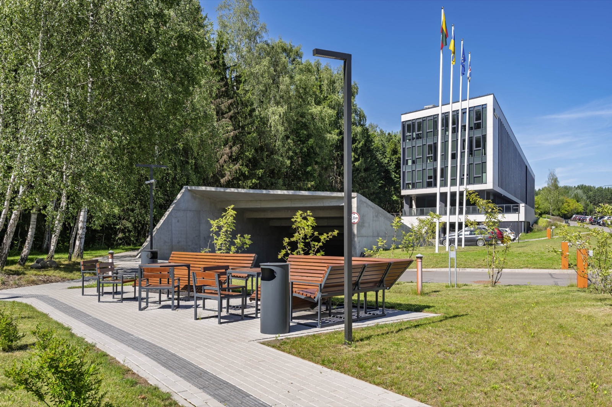
Vilniaus miesto policijos komisariatasArchitektūra · BIM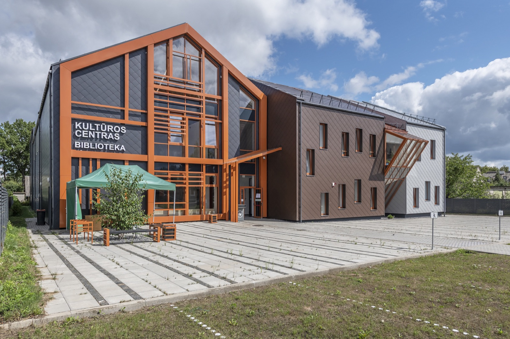
Kultūros centras ir bibliotekaArchitektūra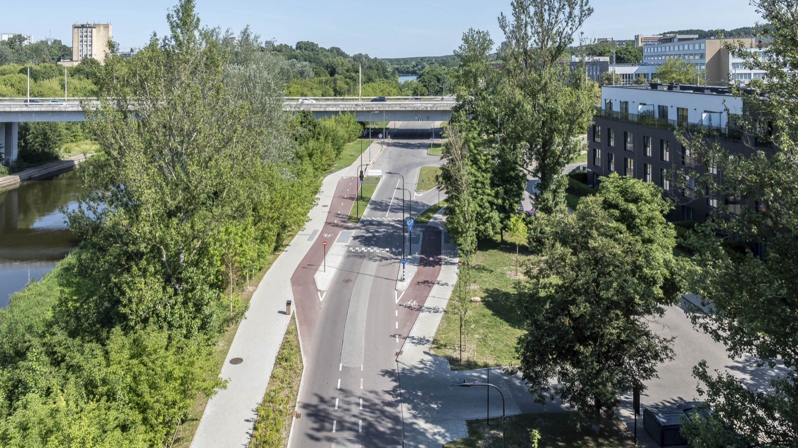
Neries krantinių B atkarpaSusisiekimo komunikacijos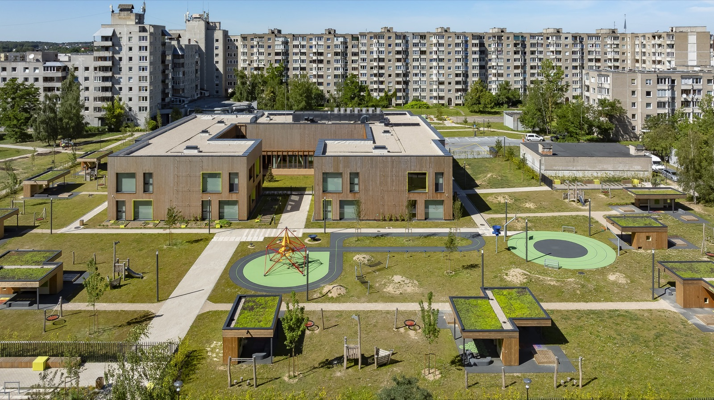
Vaikų darželis „Vydūnėlis“Architektūra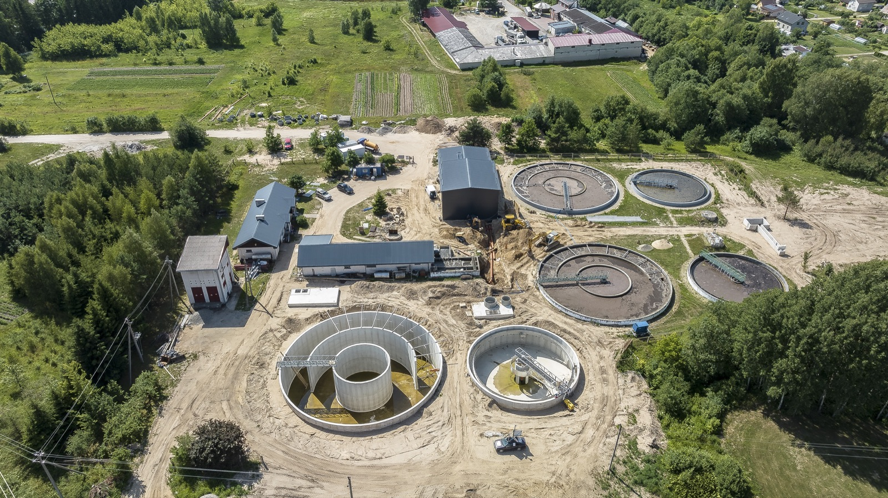
Švenčionių nuotekų valyklaInžinerinė infrastruktūra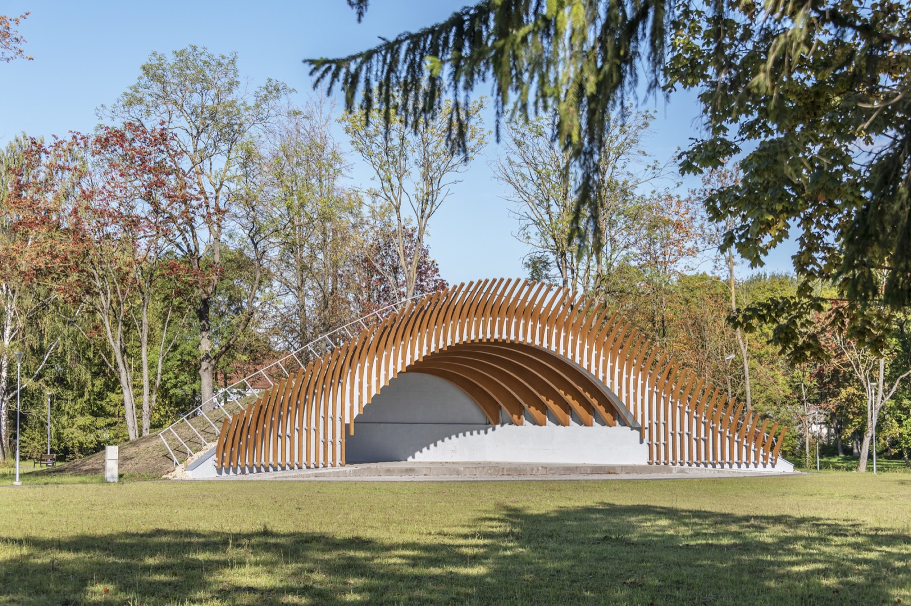
Joniškėlio sodo parkasArchitektūra Panevėžio Šiaurinė gatvėSusisiekimo komunikacijos
Panevėžio Šiaurinė gatvėSusisiekimo komunikacijos
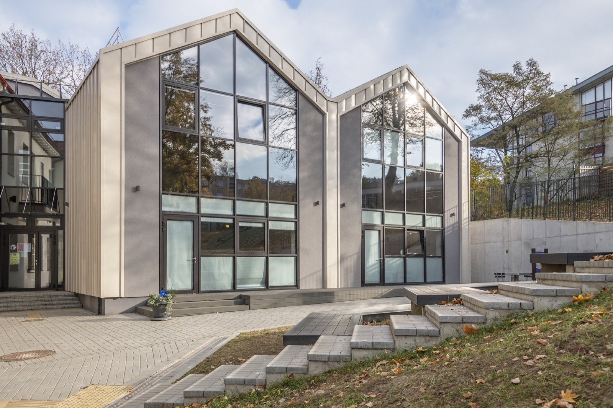
Šilo mokykla VilniujeArchitektūra Aukštųjų Panerių detalusis planasTeritorijų planavimas
Aukštųjų Panerių detalusis planasTeritorijų planavimas
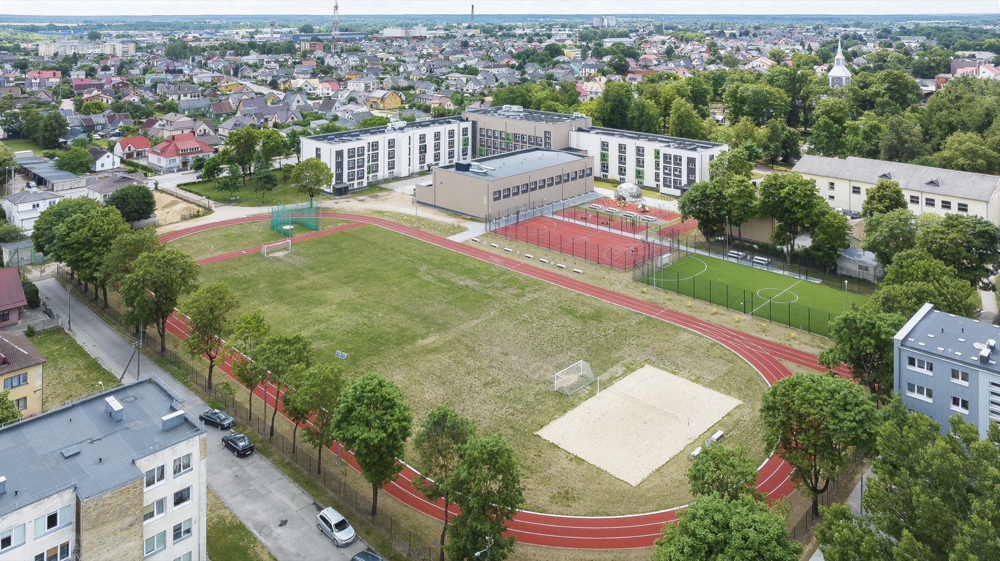
Tauragės Martyno Mažvydo progimnazijaArchitektūra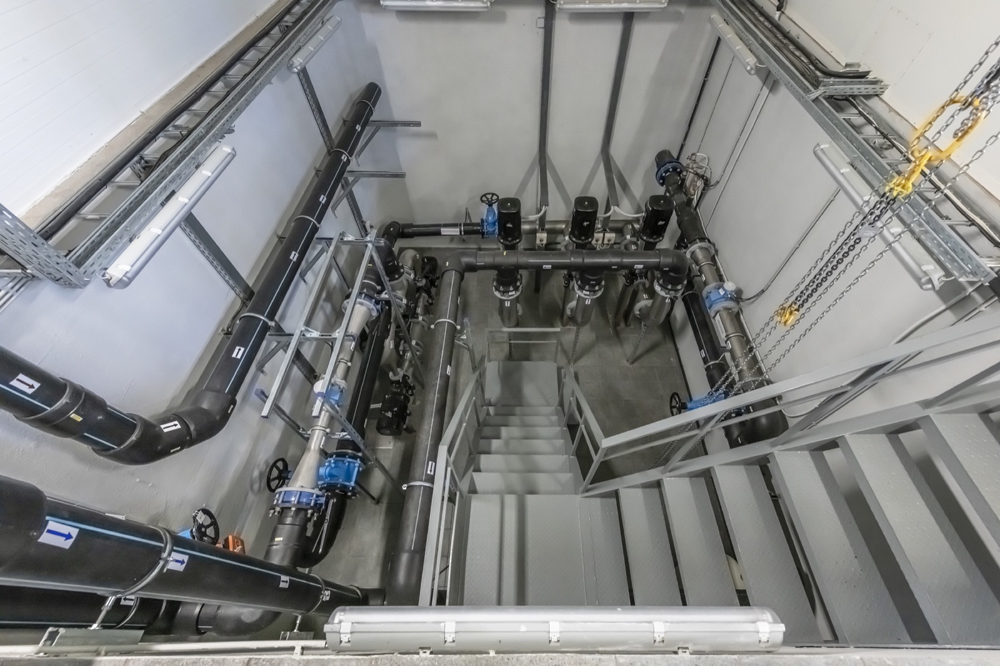
Kupiškio vandens gerinimo įrenginiaiInžinerinė infrastruktūra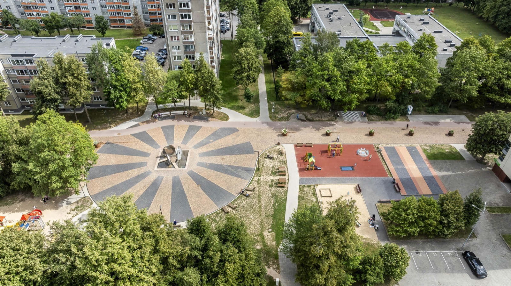
Dainų takas ir jo prieigosSusisiekimo komunikacijos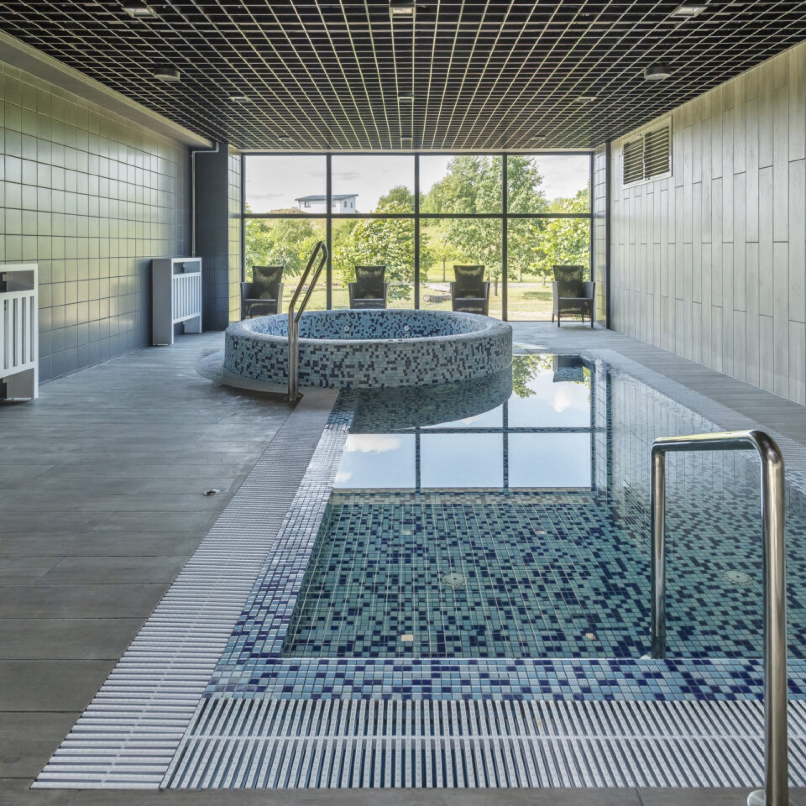
Plaukimo baseinas TelšiuoseArchitektūra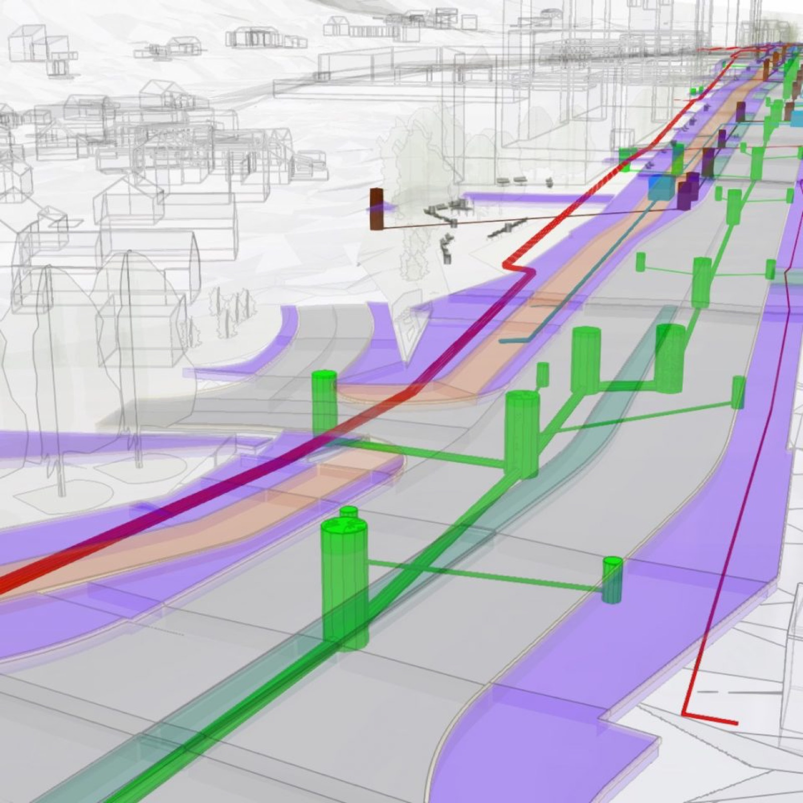
Paplaujos bulvarasInžinerinė infrastruktūra · BIM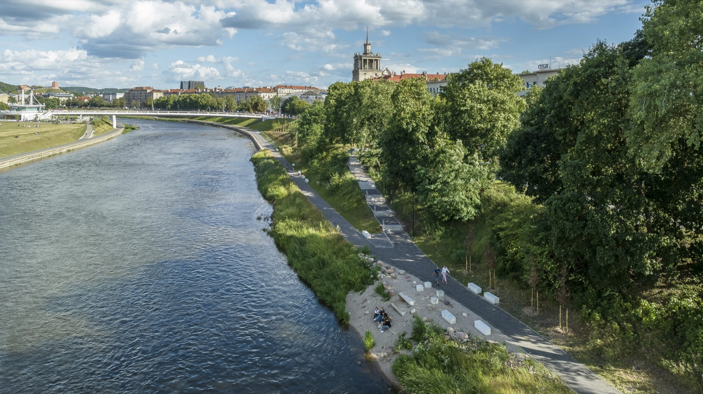
Kairės Neries krantinės atnaujinimasSusisiekimo komunikacijos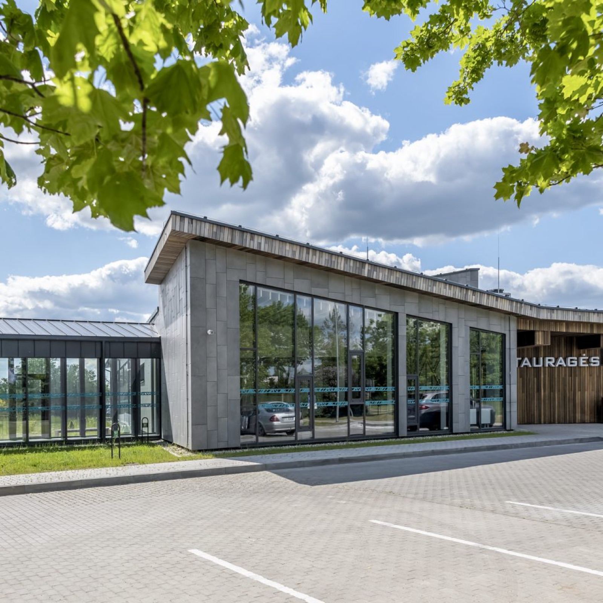
Tauragės baseinasArchitektūra Birštono bendrojo plano korektūraTeritorijų planavimas
Birštono bendrojo plano korektūraTeritorijų planavimas